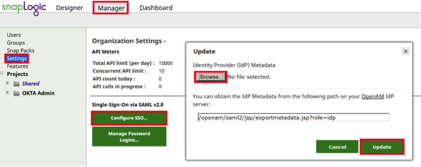
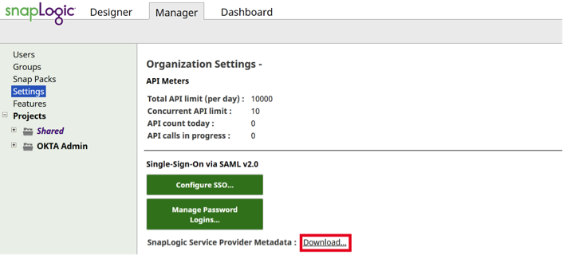
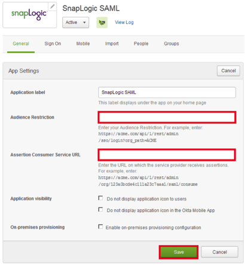
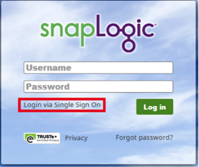
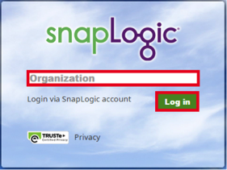

How to Configure SAML 2.0 for SnapLogic
This setup might fail without parameter values that are customized for your organization. Please use the Okta Administrator Dashboard to add an application and view the values that are specific for your organization.
-
Copy the following IDP Metadata into a text file. Save it with the file name metadata.xml.
Sign in to Okta Admin app to have this variable generated for you.
- Open your SnapLogic instance and navigate to Manager > Settings.
- Select Configure SSO..., as shown below.

- Select Browse in the Update box and navigate to the metadata.xml file you saved in step 1.
- Select Update.
- Select Download... in the Single-Sign-On via SAML v2.0 section to download your SnapLogic Service Provider Metadata file, as shown below.

- Open the downloaded SnapLogic Service Provider Metadata file in a text editor.
- In a separate window, navigate to the SnapLogic app in Okta and select the General tab to to open the screen shown below.

- In the text editor, copy the value of the entityID in the metadata, as shown below, and paste it into the Audience Restriction field in Okta, shown in step 8.

- In the text editor, copy the value of the Location in the metadata, as shown above, and paste it into the Assertion Consumer Service URL field in Okta, shown in step 8.
- In Okta, select Save.
-
Done!
Note: SnapLogic supports IdP-iniated and SP-initiated flows. Just In Time (JIT) provisioning is not supported>
For an SP-initiated flow, use the following two-step process.
- Open the SnapLogic instance sign-in page, and select Login via Single Sign-On, as shown below.

- On the screen that opens, enter your Organization and then select Log in, as shown below.
